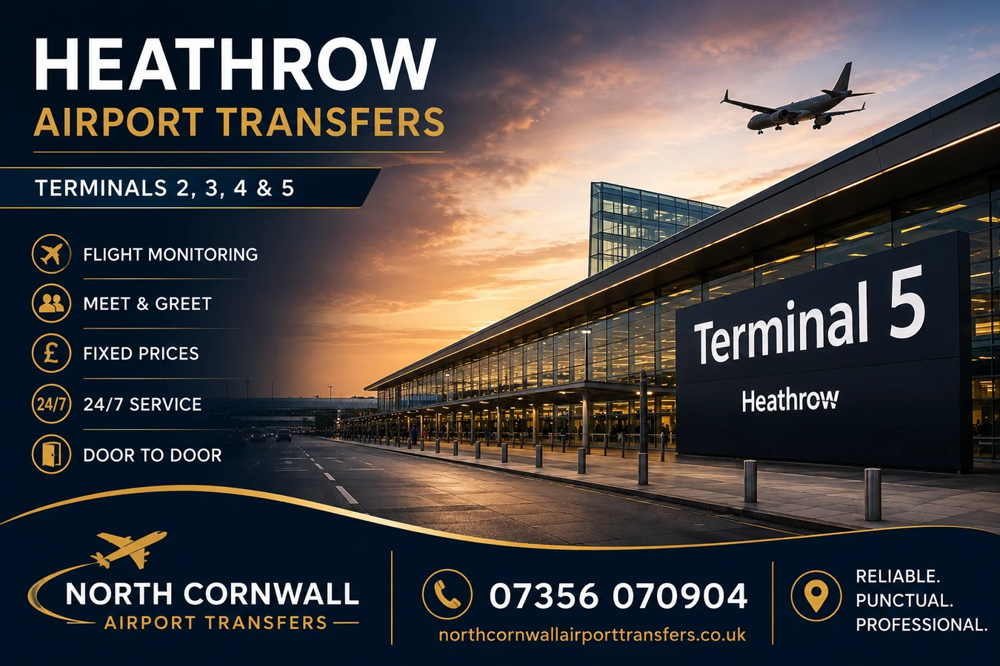
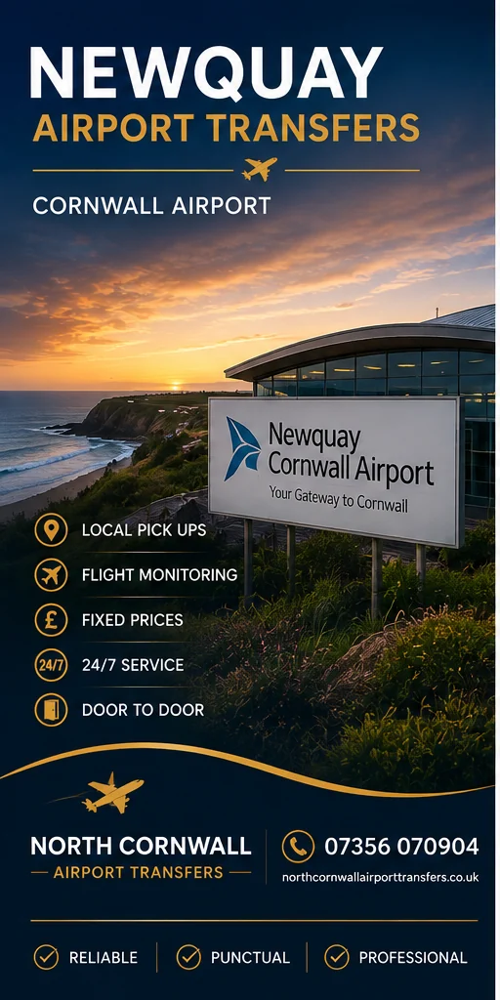
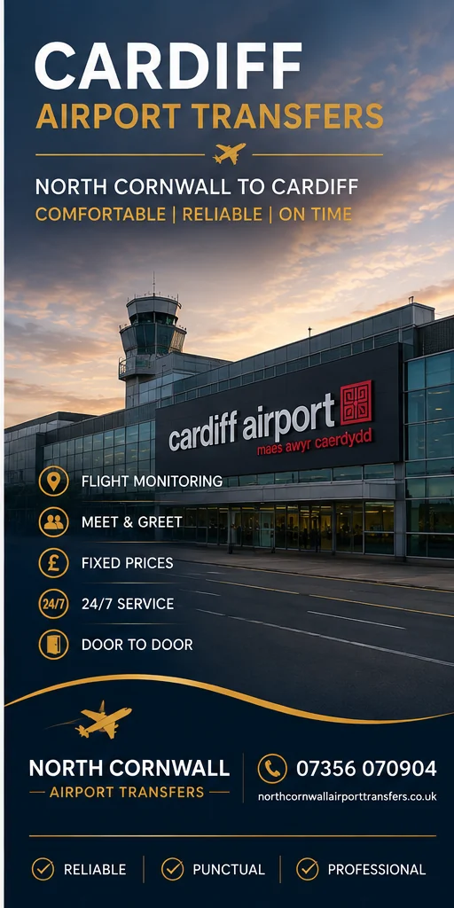
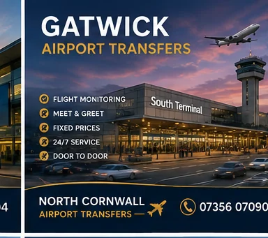
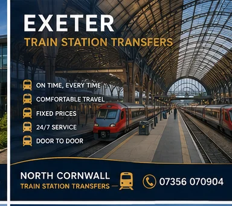

North Cornwall transfer specialists
From your door to the airport, port or station.
Private pre-booked journeys across North Cornwall and nearby North Devon, with comfortable travel to airports, cruise terminals, ferry ports, railway stations and destinations throughout the UK.
Airport transfersTrain stationsSeaports & cruisesLong distance
Add to your phone
Install the site like an app.
Install the site like an app.
Door-to-doorHomes, hotels and holiday accommodation
Private journeysNo shared shuttle stops
Flight-aware planningArrival details considered
Direct contactCall or WhatsApp the provider
Popular destinations
Airport transfer pages that link directly to the details customers need.
Each destination has its own page, quotation route and carefully matched imagery.
Exeter Airport
Regional airport travel for local and long-distance passengers.
View transfer details →


More than airports
Train station, seaport and cruise-terminal transfers.
The new site now properly presents the full service instead of making every journey look like an airport booking.



Southampton Cruise Terminals
Long-distance cruise connections for families and groups.
View cruise transfer →◆
Business travel
Pre-booked journeys for employees, visitors and client travel.
▣
Groups and luggage
Vehicle suitability checked against passengers and all luggage.
⌖
UK long distance
Direct private travel to destinations throughout the UK.
Mobile first
Designed to feel like an app on every phone.
The layout automatically changes for Android, iPhone, tablet and desktop. Mobile users get one-column content, larger fields, a compact menu and permanent call and WhatsApp actions.
✓No horizontal scrolling
✓Large thumb-friendly buttons
✓Fast locally hosted WebP images
✓Installable home-screen app mode
Clear booking process
Four steps from enquiry to collection.
Send the details
Pickup, destination, date, passengers, luggage and travel number.
Receive a quote
The route, time and suitable vehicle are checked.
Confirm directly
Price, payment and meeting arrangements are agreed.
Travel door to door
Meet the confirmed vehicle at the agreed time.